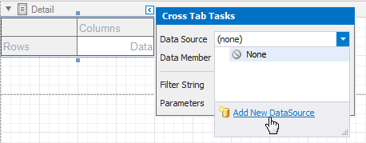

Cross Tab Overview
Use the Cross Tab control to display multi-dimensional data, such as summary statistics, surveys, and market research information.

Add a Cross Tab to a Report
Drag the Cross Tab item from the Toolbox onto a report.

You cannot place the Cross Tab in another report control (Table Cell or Panel) because its width cannot be determined at design time.
Bind to Data
Use the Cross Tab's Data Source and Data Member properties to bind this control to data.
- Click the Cross Tab's smart tag.
- Expand the Data Source property's drop-down list and click Add New Data Source.
- Follow the steps in the invoked Data Source Wizard to configure a data source.

If these properties are not set, the Cross Tab uses its parent report's data source (the report's Data Source and Data Member properties).
Note
If you place a Cross Tab in the Detail band, ensure that the report's Data Source property is not set. Otherwise, the Cross Tab data is printed as many times as there are rows in the report data source.
The following step-by-step tutorials describe how to create reports that use the Cross Tab control:
- Create a Cross-Tab Report - Use the Cross-Tab Report Wizard to create a report.
- Balance Sheets - Configure a Cross Tab on the design surface.